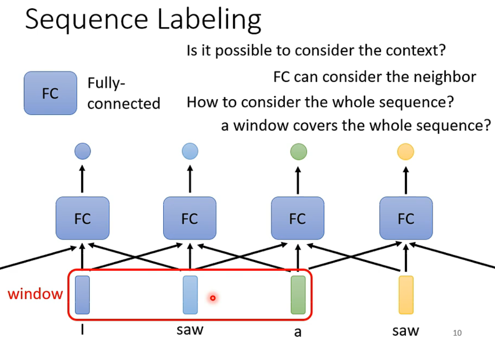
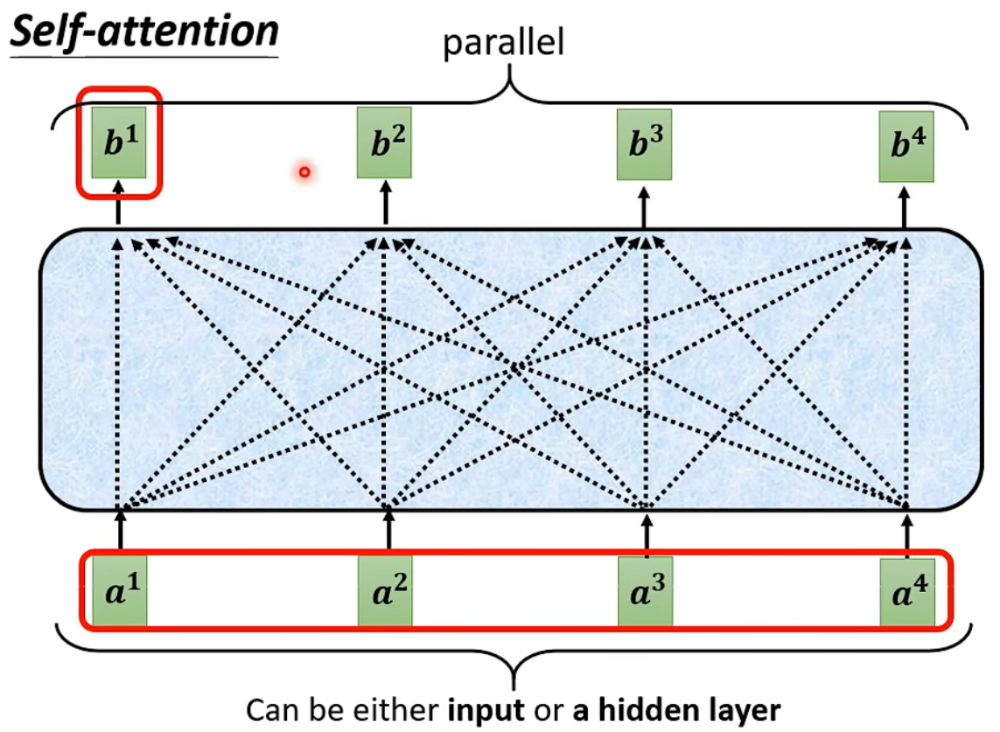
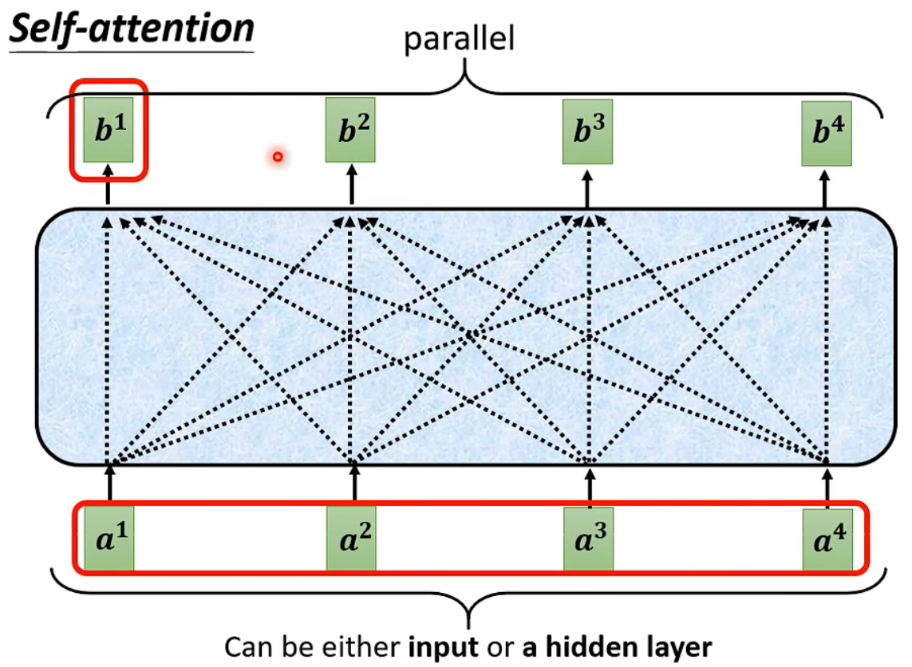
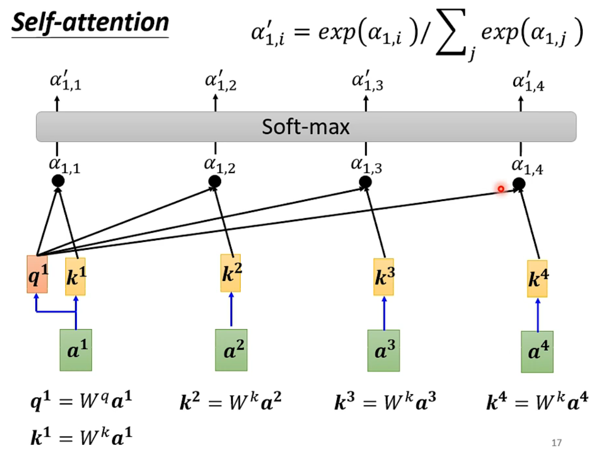
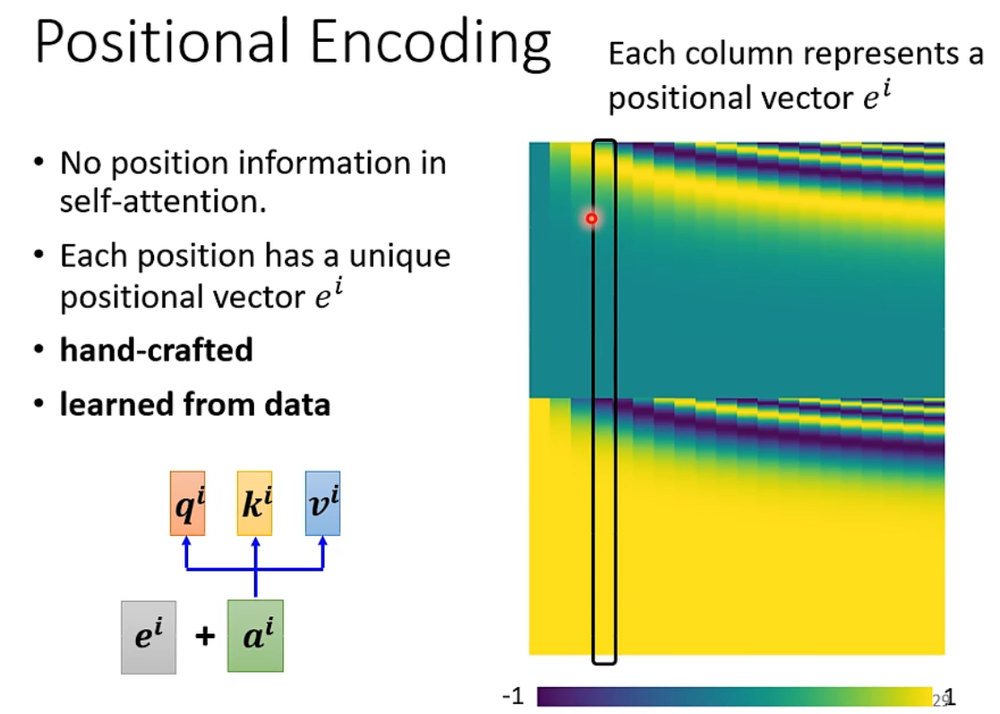

Self attention 解决什么问题#
用一句话概括就是：Self attention用来解决当输入为向量的序列时的问题（像音频、文本都是经典的输入为向量序列的数据）
Self attention的输出一般有如下三种类型
-
N个vector产生N个label
例如输入一个句子，输出每个词的词性
-
N个vector产生1个label
例如输入一个句子，判断这句话蕴含的情绪为positive or negative
-
N个vector产生N’（N≠N’）个label
例如机器翻译，输入的句子和输出的句子词数很可能不一样

FC(Fully Connected)有什么不足#
FC也可以用来解决输出为向量序列的问题，如天气预测等等，但是它相比self attention有一些不足之处。
FC如果要充分考虑“上下文”——一个向量和它相邻的很多个向量，甚至可能整个序列一起考虑，就需要把考虑的向量串联起来，通过fully connect产生新的向量，那么参数的矩阵可能会非常大（这个在后面会解释），这可能导致很大的运算量和overfitting。
Self attention 的架构#
首先我们来看一个self attention层要做什么。
概况一下就是，一个self attention层要先算出每个向量和其他向量的关联性，这个关联性用attention score
 

然后我们再看整个网络架构，经过self attention层后，产生了输出向量序列，这时候可以先对每一个向量进行fully connect，产生输入到下一个self attention层中的输入向量，然后就是重复，直至产生最终输出。

Self attention 的基本计算过程#
求attention score#
对于输入向量序列
- 对
求 ， ，其中 为参数矩阵，是要学习的参数 - 对
求 ， ，其中 为参数矩阵，是要学习的参数 - 求
和 的关联性，常见方法是向量点乘，如 - 对上一步求得的
通过激活函数，常用softmax，最后得到attention score
可以参照下图直观地理解上述步骤
求解Self attention层输出的向量#
对于输入向量序列
- 对
求 ， ，其中 为参数矩阵，是要学习的参数 - 利用求得的attention score对
进行加权： ，从而得到
可以参照下图直观地理解上述步骤

矩阵视角下的计算过程#
下面三张图非常直观地展示了
- 产生
- 计算attention score
- 计算输出向量

上面提到的矩阵视角下的计算过程可以归结为下图，我们也可以发现，对于一层self attention层而言，需要学习的参数只有
前面说到FC可能在考虑整个向量序列的情况下有大量的参数，比如说输入的向量序列为10000个100x1的向量，如果在考虑整个向量序列的情况下要产生10000个10x1的向量，用FC需要的参数数量级为(10000x100)x(10000x10)，而如果用self attention，那么
Self attention的优化#
Multi-head Self attention#
考虑到在不同的视角下，一个向量和其他向量会有不同的关联性，所以我们可以用不同系数矩阵，最终产生多组向量序列输出。

我们也可以对多组向量序列输出进行拼接、变换，得到一组输出向量序列

Positional Encoding#
在之前的产生输出向量序列的操作中，我们可能忽略了输入向量序列在坐标或者时间尺度上的相关性，而这有时是很重要的，比如在音频识别中，识别一个音符考虑的就是在一小段时间内的信号，那么这一小段时间内向量的相关性就极强。
所以我们可以通过在输入向量序列上加一个用来代表位置的向量，来为输入向量增加坐标/时间信息。这个代表位置的向量可以是直接计算得到的，也可以是通过神经网络学习得到的。
Self attention 和其他网络对比#
CNN#
其实图像也可以看作是向量的序列——比如一张100x100x3的图片，可以看作是100x100个向量（一个像素的RGB三通道值作为向量）。
通过设置如果attention score合适，是不是也可以表现出CNN的效果？而且self attention可以打破CNN中由于卷积核带来的像素只与周边像素作用的限制，让一个像素可以和离它较远的像素作用。
所以，self attention是更灵活的CNN，而CNN是简化的self attention

在二者训练效果对比中也可以发现，对于小的数据集，自由度比较小的CNN表现得更好，对于大数据集而言，self attention表现的效果更好。

RNN#
相比RNN而言，self attention由于并行运算可以获得更快的运算速度，同时相比RNN不易考虑到距离一个向量在坐标尺度下比较远的向量，self attention可以通过attention score充分考虑到一个向量在坐标尺度下距离比较远的向量。

GNN#
self attention可以看作是一种特殊的GNN，如果两个点直接由连线，那么attention可以设为1，否则直接设为0。

作者: 核子